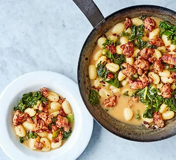

Sausage, kale and gnocchi one-pot

Description
Plate up this delicious one-pot of sausage, kale and gnocchi in just 20 minutes, with just five minutes prep. Midweek suppers never got so easy – or tasty!
I used to make this all the time at Alexandra using real sausages, but you can easily switch the Richmond Veggie sausages to make it veggie.
Ingredients
- 1 tbsp olive oil
- 6 pork sausages
- 1 tsp chilli flakes
- 1 tsp fennel seeds (optional)
- 500g fresh gnocchi
- 500ml chicken stock (fresh if you can get it)
- 100g chopped kale
- 40g parmesan, finely grated
Steps
- Heat the oil in a large high-sided frying pan over a medium heat.
- Squeeze the sausages straight from their skins into the pan, then use the back of a wooden spoon to break the meat up.
- Sprinkle in the chilli flakes and fennel seeds, if using, then fry until the sausage meat is crisp around the edges.
- Remove from the pan with a slotted spoon.
- Tip the gnocchi into the pan, fry for a minute or so, then pour in the chicken stock.
- Once bubbling, cover the pan with a lid and cook for 3 mins, then stir in the kale.
- Cook for 2 mins more or until the gnocchi is tender and the kale has wilted.
- Stir in the parmesan, then season with black pepper and scatter the crisp sausage meat over the top.